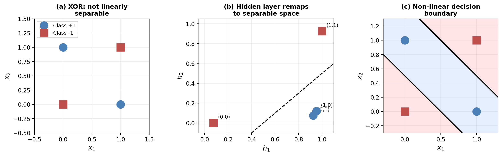
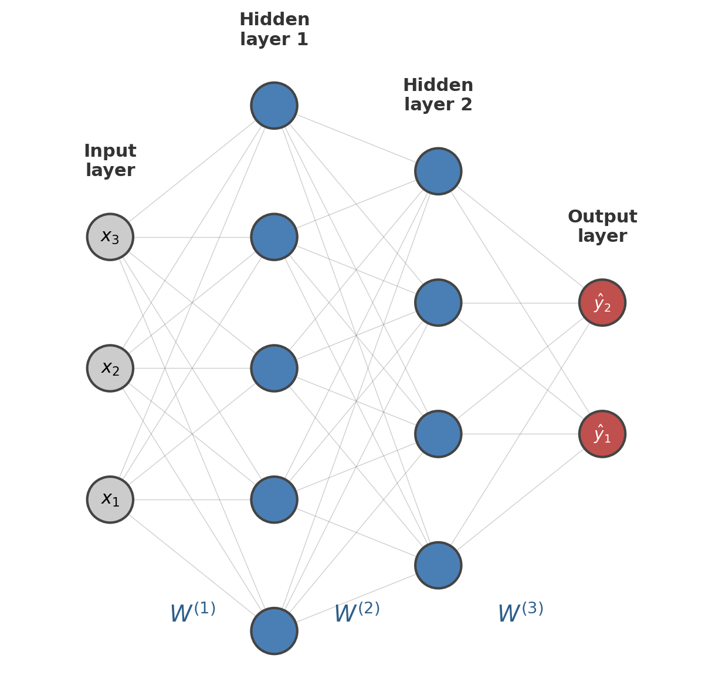
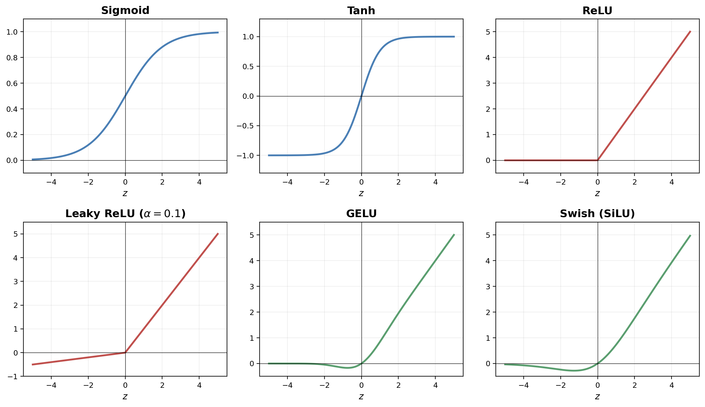
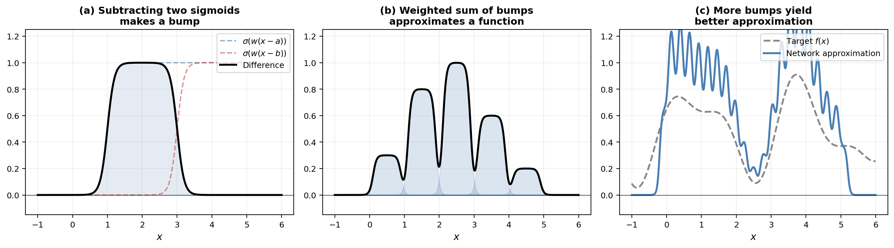
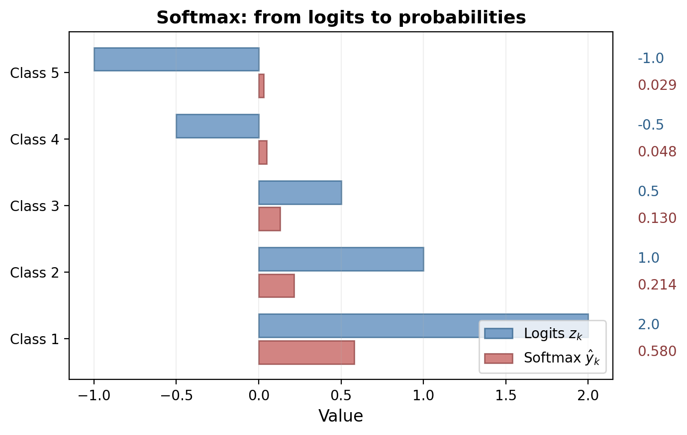
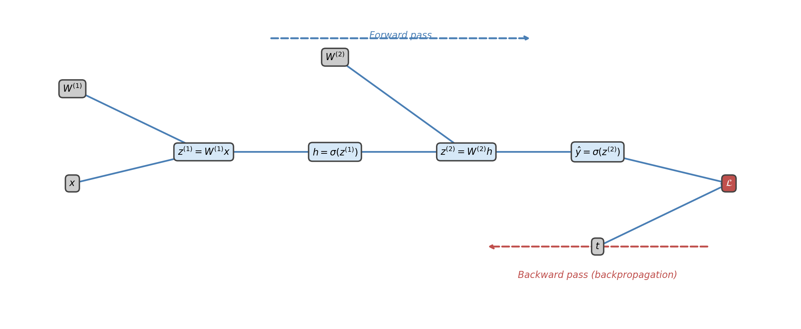
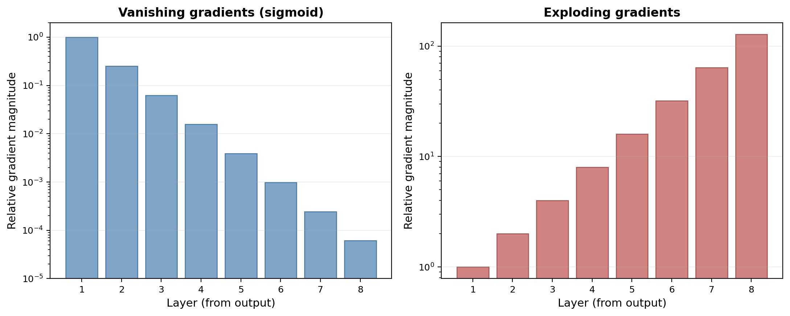
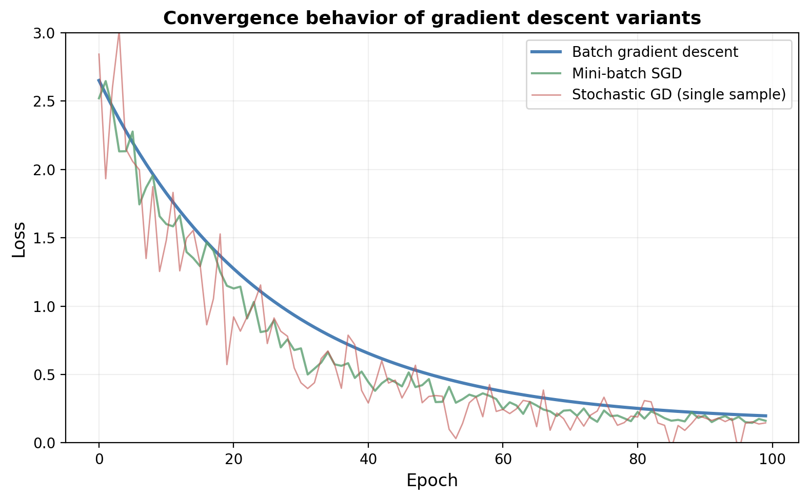
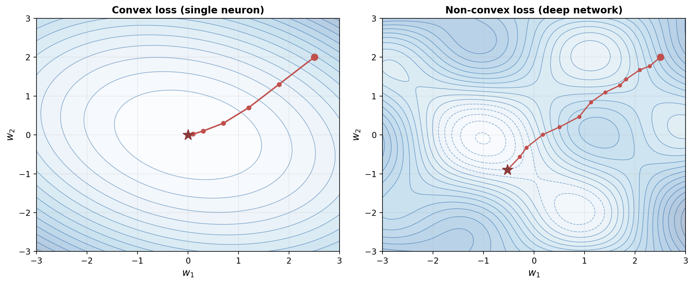
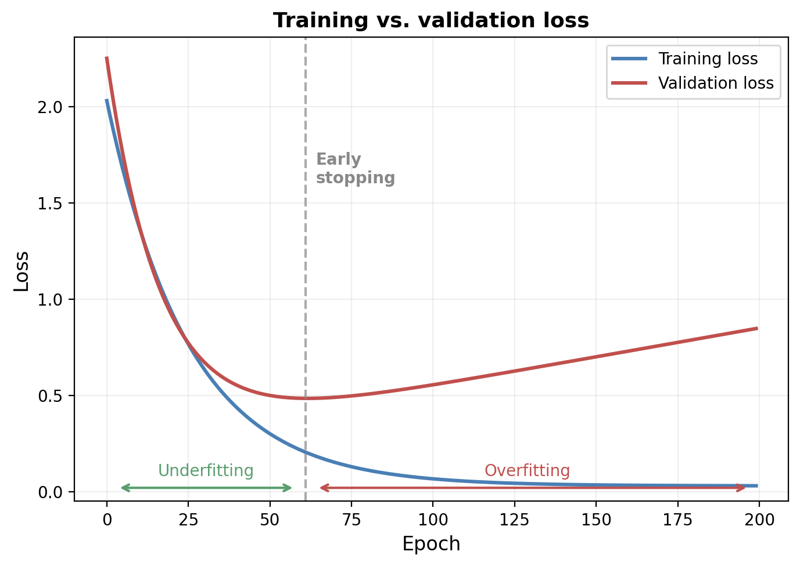

The previous articles developed two fundamental building blocks: the perceptron, a binary classifier that finds separating hyperplanes via a simple update rule, and the sigmoid neuron, which replaces the hard threshold with a smooth probabilistic model trained by gradient descent on the cross-entropy loss. Both are single neurons — they compute a linear function of the input and pass it through an activation function. This means they can only represent linear decision boundaries. The XOR function, as Minsky and Papert demonstrated in 1969, lies forever beyond a single neuron's reach.
The remedy is straightforward in principle: connect many neurons together into a network. By composing layers of simple nonlinear units, we obtain a model capable of learning arbitrarily complex functions — a claim made precise by the universal approximation theorem. This article develops the theory of multi-layer neural networks (also called feedforward neural networks or multi-layer perceptrons) from first principles: the architecture and notation, forward propagation as matrix computation, the backpropagation algorithm for computing gradients, and the practical considerations that make training deep networks possible.
A single sigmoid neuron computes
$$ \hat{y} = \sigma(w^\top x + b) $$where $\sigma$ is the sigmoid function, $w \in \R^d$ is the weight vector, and $b \in \R$ is the bias. The output $\hat{y} \in (0, 1)$ can be interpreted as a probability. The key limitation is that the decision boundary $\{x : w^\top x + b = 0\}$ is a hyperplane — a single neuron can only carve the input space with a flat cut.
Consider the XOR function:
| $x_1$ | $x_2$ | $t$ |
|---|---|---|
| 0 | 0 | 0 |
| 0 | 1 | 1 |
| 1 | 0 | 1 |
| 1 | 1 | 0 |
No single line in $\R^2$ can separate the positive examples $(0,1)$ and $(1,0)$ from the negative examples $(0,0)$ and $(1,1)$. But if we first transform the inputs through a hidden layer of neurons, the transformed points may become linearly separable in the new space. The output neuron can then draw a single hyperplane through this transformed space, solving the problem.

This is the core idea behind neural networks: compose simple nonlinear functions to build complex ones. Each layer transforms its input into a new representation that makes the task easier for the layers that follow.
A feedforward neural network organizes neurons into layers. Information flows in one direction — from the input layer, through one or more hidden layers, to the output layer. There are no cycles.

We adopt the following conventions for a network with $L$ layers (not counting the input):
The collection of all weight matrices and bias vectors constitutes the network's parameters, which we sometimes write compactly as $\theta = \{W^{(1)}, b^{(1)}, \ldots, W^{(L)}, b^{(L)}\}$.
A network with layer widths $d_0, d_1, \ldots, d_L$ has
$$ \sum_{\ell=1}^{L} \left( d_\ell \cdot d_{\ell-1} + d_\ell \right) = \sum_{\ell=1}^{L} d_\ell (d_{\ell-1} + 1) $$learnable parameters. A modest network with layers of width $784 \to 256 \to 128 \to 10$ already has $784 \times 256 + 256 + 256 \times 128 + 128 + 128 \times 10 + 10 = 235{,}146$ parameters. Modern language models have billions.
The depth of a network is the number of layers $L$ (excluding the input). The width of a layer is its number of neurons $d_\ell$. Both affect what the network can represent:
A deep network with three hidden layers of 100 neurons each has the same number of parameters as a shallow network with one hidden layer of roughly 300 neurons, but the deep network can represent a much richer class of functions because each layer builds on the representations learned by the layer below.
Forward propagation is the process of computing the network's output given an input. It is simply the sequential application of affine transformations followed by nonlinearities:
$$ \begin{aligned} z^{(1)} &= W^{(1)} x + b^{(1)}, & h^{(1)} &= \phi(z^{(1)}) \\ z^{(2)} &= W^{(2)} h^{(1)} + b^{(2)}, & h^{(2)} &= \phi(z^{(2)}) \\ &\;\;\vdots & &\;\;\vdots \\ z^{(L)} &= W^{(L)} h^{(L-1)} + b^{(L)}, & \hat{y} &= \phi_{\text{out}}(z^{(L)}) \end{aligned} $$where $\phi$ is the hidden-layer activation function and $\phi_{\text{out}}$ is the output activation, which depends on the task (sigmoid for binary classification, softmax for multi-class, identity for regression).
In matrix form, when processing a batch of $n$ examples simultaneously with input matrix $X \in \R^{n \times d_0}$ (one example per row), each forward step becomes:
$$ H^{(\ell)} = \phi\!\left( H^{(\ell-1)} W^{(\ell)\top} + \mathbf{1}_n b^{(\ell)\top} \right) $$where $H^{(0)} = X$ and $\mathbf{1}_n$ is a column vector of ones that broadcasts the bias. This formulation maps directly to efficient matrix multiplication in NumPy or PyTorch.
def forward(X, params):
"""Forward pass through an L-layer network."""
H = X
for W, b in params[:-1]: # hidden layers
H = relu(H @ W.T + b)
W, b = params[-1] # output layer
return sigmoid(H @ W.T + b)
The choice of activation function $\phi$ has a profound effect on what the network can learn and how easily it can be trained. Without a nonlinearity, composing linear layers would simply yield another linear transformation — there would be no benefit to depth. The nonlinearity is what gives neural networks their power.

The sigmoid $\sigma(z) = 1/(1 + e^{-z})$ and the hyperbolic tangent $\tanh(z) = (e^z - e^{-z})/(e^z + e^{-z})$ are the classical activation functions. They are smooth, bounded, and biologically plausible — a neuron's firing rate saturates at both extremes. The two are related by $\tanh(z) = 2\sigma(2z) - 1$, so tanh is a rescaled and shifted sigmoid with outputs in $(-1, 1)$ rather than $(0, 1)$.
The principal drawback of both is saturation: when $|z|$ is large, the derivative is nearly zero. During backpropagation, gradients must pass through these near-zero derivatives at every layer, causing them to shrink exponentially with depth — the vanishing gradient problem. This was the central obstacle to training deep networks for decades.
The Rectified Linear Unit (ReLU), introduced for neural networks by Nair and Hinton (2010), has a deceptively simple definition:
$$ \relu(z) = \max(0, z) $$Its derivative is 1 for $z > 0$ and 0 for $z < 0$ (it is undefined at $z = 0$ but this is a measure-zero event in practice). For positive inputs, the gradient passes through unchanged — no saturation, no vanishing. This single change made it practical to train networks with many layers.
The downside is the dying ReLU problem: if a neuron's pre-activation is negative for all training examples, its gradient is permanently zero and it can never recover. Leaky ReLU addresses this by allowing a small slope $\alpha$ (typically 0.01) for negative inputs: $\text{LeakyReLU}(z) = \max(\alpha z, z)$.
Recent architectures often use smooth approximations to ReLU:
Both are smooth everywhere (unlike ReLU's kink at zero) while preserving the non-saturating property for positive inputs. The choice among these is often empirical — GELU and Swish tend to give small but consistent improvements on large-scale tasks.
Can a neural network learn any function? The answer, under mild conditions, is yes — at least in principle. The universal approximation theorem, first proved by Cybenko (1989) for sigmoid activations and later generalized by Hornik (1991), states:
For any continuous function $f: [0,1]^d \to \R$ and any $\epsilon > 0$, there exists a two-layer network (one hidden layer) with sigmoid activations and finitely many hidden units such that $|\hat{f}(x) - f(x)| < \epsilon$ for all $x \in [0,1]^d$.
This is an existence theorem, not a construction. It tells us that the network architecture is powerful enough in principle, but says nothing about how to find the right weights, or how many hidden units are needed (the answer can be exponentially large in the worst case).
The proof strategy is illuminating and connects to the lecture's visual demonstration. Consider a single input dimension. We can build a "bump" function — a function that is approximately 1 on a small interval and 0 elsewhere — using two sigmoid units:
$$ \text{bump}(x; a, b) = \sigma(w(x - a)) - \sigma(w(x - b)) $$For large $w$, each sigmoid approaches a step function, and the difference approximates a rectangular pulse between $a$ and $b$. A single hidden layer with $2K$ sigmoid neurons can create $K$ independent bumps. By choosing the heights of these bumps (the output weights), we can approximate any continuous function as a weighted sum of narrow rectangular pulses — a Riemann-sum-like construction.

In higher dimensions, each hidden neuron carves out a half-space (via $w^\top x + b > 0$), and combinations of neurons define polyhedral regions. With enough neurons, these regions tile the input space finely enough to approximate any continuous function.
The universal approximation theorem guarantees that width alone suffices, but it may require exponentially many neurons. Depth provides an exponential efficiency advantage: there exist functions computable by a network of depth $k$ with polynomial width that require exponential width at depth $k-1$. Intuitively, each layer can compose features from the previous layer, building hierarchical representations — edges combine into textures, textures into parts, parts into objects. This compositional structure is why deep networks are so effective in practice.
Training a neural network means finding parameters $\theta$ that minimize a loss function measuring the discrepancy between the network's predictions and the training targets. The choice of loss depends on the task.
For binary classification with sigmoid output, we use the cross-entropy loss derived in the sigmoid neurons article:
$$ \mathcal{L}(\theta) = -\frac{1}{n} \sum_{i=1}^{n} \left[ t^{(i)} \log \hat{y}^{(i)} + (1 - t^{(i)}) \log(1 - \hat{y}^{(i)}) \right] $$where $t^{(i)} \in \{0, 1\}$ and $\hat{y}^{(i)} = f_\theta(x^{(i)}) \in (0, 1)$.
For $K$-class classification, the output layer uses the softmax function to convert the $K$ logits $z_1, \ldots, z_K$ into a probability distribution:
$$ \hat{y}_k = \softmax(z)_k = \frac{e^{z_k}}{\sum_{j=1}^{K} e^{z_j}}, \quad k = 1, \ldots, K $$Each output $\hat{y}_k \in (0, 1)$ and $\sum_k \hat{y}_k = 1$. The loss is the categorical cross-entropy:
$$ \mathcal{L}(\theta) = -\frac{1}{n} \sum_{i=1}^{n} \sum_{k=1}^{K} t_k^{(i)} \log \hat{y}_k^{(i)} $$where $t^{(i)}$ is a one-hot vector with $t_k^{(i)} = 1$ for the correct class and 0 elsewhere. Since only one term in the inner sum is nonzero, this simplifies to $-\frac{1}{n}\sum_i \log \hat{y}_{c_i}^{(i)}$, where $c_i$ is the correct class for example $i$.

For regression (predicting continuous values), the output layer uses the identity activation ($\hat{y} = z^{(L)}$) and the loss is the mean squared error:
$$ \mathcal{L}(\theta) = \frac{1}{n} \sum_{i=1}^{n} \| t^{(i)} - \hat{y}^{(i)} \|^2 $$We need to compute $\partial \mathcal{L} / \partial W^{(\ell)}$ and $\partial \mathcal{L} / \partial b^{(\ell)}$ for every layer $\ell$ in order to apply gradient descent. Computing these gradients by hand for each weight would be intractable — a network with a million parameters would require a million separate derivations.
Backpropagation solves this by exploiting the chain rule of calculus in a structured way, reusing intermediate computations. It was popularized for neural networks by Rumelhart, Hinton, and Williams (1986), though the mathematical idea — automatic differentiation in reverse mode — was known earlier.

Consider a two-layer network with sigmoid activations and cross-entropy loss. The forward pass computes:
$$ z^{(1)} = W^{(1)} x + b^{(1)}, \quad h = \sigma(z^{(1)}), \quad z^{(2)} = W^{(2)} h + b^{(2)}, \quad \hat{y} = \sigma(z^{(2)}) $$We want $\partial \mathcal{L} / \partial W^{(1)}$. By the chain rule:
$$ \frac{\partial \mathcal{L}}{\partial W^{(1)}} = \frac{\partial \mathcal{L}}{\partial \hat{y}} \cdot \frac{\partial \hat{y}}{\partial z^{(2)}} \cdot \frac{\partial z^{(2)}}{\partial h} \cdot \frac{\partial h}{\partial z^{(1)}} \cdot \frac{\partial z^{(1)}}{\partial W^{(1)}} $$Each factor in this chain has a simple form:
The key insight of backpropagation is to define a local error signal (or delta) at each layer:
$$ \delta^{(\ell)} = \frac{\partial \mathcal{L}}{\partial z^{(\ell)}} $$This is the gradient of the loss with respect to the pre-activation at layer $\ell$. Once we know $\delta^{(\ell)}$, the parameter gradients follow immediately:
$$ \boxed{\frac{\partial \mathcal{L}}{\partial W^{(\ell)}} = \delta^{(\ell)} \, h^{(\ell-1)\top}, \qquad \frac{\partial \mathcal{L}}{\partial b^{(\ell)}} = \delta^{(\ell)}} $$And the error signal propagates backward via:
$$ \boxed{\delta^{(\ell-1)} = \left( W^{(\ell)\top} \delta^{(\ell)} \right) \odot \phi'(z^{(\ell-1)})} $$where $\odot$ denotes element-wise multiplication and $\phi'$ is the derivative of the activation function. This is the backpropagation recurrence: the error at layer $\ell - 1$ is the error at layer $\ell$, projected back through the weight matrix, and modulated by the local activation derivative.
The full backpropagation algorithm for a single training example $(x, t)$:
The entire computation is $O(P)$ where $P$ is the number of parameters — the same order as a single forward pass. This efficiency is what makes training large networks feasible.
Consider a tiny network: 2 inputs, 2 hidden units (sigmoid), 1 output (sigmoid), trained with cross-entropy loss. Suppose the current weights produce hidden activations $h = [0.6, 0.4]^\top$ and output $\hat{y} = 0.7$ for a target $t = 1$.
The output error is $\delta^{(2)} = \hat{y} - t = 0.7 - 1 = -0.3$.
If $W^{(2)} = [0.5, -0.3]$, then the backpropagated error is:
$$ \delta^{(1)} = W^{(2)\top} \delta^{(2)} \odot h \odot (1 - h) = \begin{bmatrix} 0.5 \\ -0.3 \end{bmatrix} (-0.3) \odot \begin{bmatrix} 0.6 \cdot 0.4 \\ 0.4 \cdot 0.6 \end{bmatrix} = \begin{bmatrix} -0.15 \\ 0.09 \end{bmatrix} \odot \begin{bmatrix} 0.24 \\ 0.24 \end{bmatrix} = \begin{bmatrix} -0.036 \\ 0.0216 \end{bmatrix} $$The gradient for $W^{(2)}$ is $\delta^{(2)} h^\top = -0.3 \times [0.6, 0.4] = [-0.18, -0.12]$. Both weights increase (since the gradient is negative and we subtract), pushing $\hat{y}$ closer to the target $t = 1$.
The backpropagation recurrence reveals a fundamental difficulty. The error signal at layer $\ell$ is:
$$ \delta^{(\ell)} = \left(\prod_{k=\ell+1}^{L} W^{(k)\top} \, \text{diag}(\phi'(z^{(k-1)}))\right) \delta^{(L)} $$This is a product of $L - \ell$ matrices. If the factors $\|W^{(k)\top} \, \text{diag}(\phi'(z^{(k-1)}))\|$ are consistently less than 1, the product shrinks exponentially with depth — gradients vanish. If they are consistently greater than 1, gradients explode.

For sigmoid activations, $\sigma'(z) \leq 0.25$ everywhere. Even with well-chosen weights, the gradient shrinks by a factor of at least 4 at each layer. After 8 layers, the gradient reaching the first layer is at most $(0.25)^8 \approx 1.5 \times 10^{-5}$ of the output gradient. The early layers barely learn.
This is why the choice of activation function matters so much. ReLU has derivative 1 for positive inputs, so it does not attenuate the gradient. Combined with careful weight initialization, ReLU made it possible to train networks with tens or even hundreds of layers. More recent innovations — residual connections, layer normalization, and careful initialization schemes — have further tamed the gradient flow problem, enabling networks with thousands of layers.
With gradients in hand from backpropagation, we update the parameters using gradient descent:
$$ \theta \leftarrow \theta - \eta \nabla_\theta \mathcal{L} $$where $\eta > 0$ is the learning rate. In practice, computing the gradient over the entire training set (batch gradient descent) is expensive and often unnecessary.
Stochastic gradient descent (SGD) estimates the gradient from a single randomly chosen example:
$$ \theta \leftarrow \theta - \eta \nabla_\theta \mathcal{L}^{(i)} $$where $\mathcal{L}^{(i)}$ is the loss on example $i$. The estimate is noisy but unbiased — in expectation, it equals the true gradient. This noise can be beneficial: it helps the optimizer escape shallow local minima and saddle points.
In practice, the compromise is mini-batch SGD: compute the gradient over a random subset (a mini-batch) of $B$ examples:
$$ \theta \leftarrow \theta - \frac{\eta}{B} \sum_{i \in \mathcal{B}} \nabla_\theta \mathcal{L}^{(i)} $$Typical batch sizes are 32, 64, 128, or 256. This balances the noise reduction of averaging with the computational efficiency of not processing the entire dataset.

For a single sigmoid neuron, the cross-entropy loss is convex — any local minimum is the global minimum. For multi-layer networks, the loss is non-convex: the landscape contains many local minima, saddle points, and flat regions.

Surprisingly, this non-convexity is less problematic than it first appears. Research has shown that in high-dimensional parameter spaces, most local minima have loss values close to the global minimum, and the main obstacles are saddle points rather than bad local minima. SGD's inherent noise provides a natural mechanism for escaping these saddle points.
The learning rate $\eta$ is the most important hyperparameter:
A common strategy is learning rate scheduling — starting with a larger learning rate and gradually reducing it. Popular schedules include step decay (halve the rate every $k$ epochs), cosine annealing, and warm-up followed by decay.
Gradient descent is an iterative algorithm that starts from an initial point. For neural networks, the choice of initialization profoundly affects whether training succeeds at all.
Zero initialization fails completely: if all weights are zero (or identical), every neuron computes the same function, produces the same gradient, and receives the same update. The symmetry is never broken. This is the symmetry-breaking problem.
The solution is random initialization, but the scale matters. If the weights are too large, activations saturate and gradients vanish (for sigmoid/tanh) or explode. If too small, the signal shrinks to zero as it propagates through layers.
Xavier initialization (Glorot and Bengio, 2010) sets each weight as:
$$ W^{(\ell)}_{ij} \sim \mathcal{N}\!\left(0, \frac{2}{d_{\ell-1} + d_\ell}\right) $$This keeps the variance of activations roughly constant across layers for tanh and sigmoid activations.
He initialization (He et al., 2015) accounts for ReLU's tendency to zero out half its inputs:
$$ W^{(\ell)}_{ij} \sim \mathcal{N}\!\left(0, \frac{2}{d_{\ell-1}}\right) $$The factor of 2 compensates for the fact that ReLU sets negative pre-activations to zero, halving the variance. With He initialization, a 50-layer ReLU network maintains stable gradient magnitudes — something impossible with naive random initialization.
Neural networks, especially large ones, have enormous capacity and can easily memorize the training data. Regularization refers to techniques that constrain the model to improve generalization — performance on unseen data.

Add a penalty on the squared magnitude of the weights to the loss:
$$ \mathcal{L}_{\text{reg}}(\theta) = \mathcal{L}(\theta) + \frac{\lambda}{2} \sum_{\ell} \|W^{(\ell)}\|_F^2 $$where $\|\cdot\|_F$ is the Frobenius norm and $\lambda > 0$ controls the regularization strength. The gradient contribution from the penalty is simply $\lambda W^{(\ell)}$, which shrinks the weights toward zero at each step — hence the name weight decay.
Dropout (Srivastava et al., 2014) randomly sets each hidden unit to zero with probability $p$ during each training step. At test time, all units are active but their outputs are scaled by $(1 - p)$ to compensate. This prevents units from co-adapting — each neuron must learn to be useful on its own, since it cannot rely on any specific set of partners always being present.
Dropout can be viewed as training an implicit ensemble of $2^H$ sub-networks (where $H$ is the number of hidden units), each corresponding to a different dropout mask. The test-time prediction is an approximation to the ensemble average.
The simplest and most effective regularizer is early stopping: monitor the loss on a held-out validation set and stop training when it begins to increase. The network's capacity is implicitly controlled by the number of gradient descent steps — stopping early corresponds to staying in a region of parameter space close to the initialization, which acts as a form of regularization analogous to L2 penalties.
We can now summarize the complete recipe for training a feedforward neural network:
import numpy as np
def relu(z):
return np.maximum(0, z)
def relu_deriv(z):
return (z > 0).astype(float)
def softmax(z):
e = np.exp(z - z.max(axis=1, keepdims=True))
return e / e.sum(axis=1, keepdims=True)
def train(X, T, layers, lr=0.01, epochs=100, batch_size=32):
"""Train a feedforward network with ReLU hidden layers and softmax output."""
# He initialization
params = []
for d_in, d_out in zip(layers[:-1], layers[1:]):
W = np.random.randn(d_out, d_in) * np.sqrt(2.0 / d_in)
b = np.zeros(d_out)
params.append([W, b])
n = X.shape[0]
for epoch in range(epochs):
perm = np.random.permutation(n)
for start in range(0, n, batch_size):
idx = perm[start:start + batch_size]
x, t = X[idx], T[idx]
# Forward pass (store activations)
hs, zs = [x], []
for W, b in params[:-1]:
z = hs[-1] @ W.T + b
zs.append(z)
hs.append(relu(z))
W, b = params[-1]
z = hs[-1] @ W.T + b
zs.append(z)
y_hat = softmax(z)
# Backward pass
delta = (y_hat - t) / len(idx)
for l in range(len(params) - 1, -1, -1):
W, b = params[l]
grad_W = delta.T @ hs[l]
grad_b = delta.sum(axis=0)
if l > 0:
delta = (delta @ W) * relu_deriv(zs[l - 1])
params[l][0] -= lr * grad_W
params[l][1] -= lr * grad_b
return params
This implementation, while minimal, captures every essential idea: He initialization, mini-batch SGD, ReLU activations, softmax output, cross-entropy loss (implicit in the $\hat{y} - t$ delta), and full backpropagation. In practice, one would use a framework like PyTorch that implements these operations efficiently on GPUs with automatic differentiation.
The history of neural networks is marked by cycles of enthusiasm and disappointment. McCulloch and Pitts (1943) showed that networks of binary threshold units could compute any logical function. Rosenblatt's perceptron (1957) introduced learning from data. Minsky and Papert's Perceptrons (1969) demonstrated the limitations of single-layer networks, contributing to the first "AI winter" for neural networks.
The backpropagation algorithm revived the field. While the mathematical idea of reverse-mode automatic differentiation appeared in Linnainmaa (1970) and was applied to neural networks by Werbos (1974), the watershed moment was the 1986 paper by Rumelhart, Hinton, and Williams, which demonstrated that backpropagation could learn useful internal representations in multi-layer networks. This launched the connectionism movement of the 1980s and 1990s.
The second winter came as support vector machines and other kernel methods outperformed neural networks on many tasks. The revival began around 2006 with Hinton's work on deep belief networks, but the decisive breakthrough was the 2012 ImageNet result by Krizhevsky, Sutskever, and Hinton, where a deep convolutional network dramatically outperformed all other methods. Since then, neural networks — now called deep learning — have become the dominant paradigm in machine learning, achieving state-of-the-art results in vision, speech, natural language processing, and many other domains.
For NLP specifically, the transition from feedforward networks to recurrent networks, attention mechanisms, and ultimately the transformer architecture (Vaswani et al., 2017) has been revolutionary. The feedforward network developed in this article is the foundation upon which all these architectures are built: every transformer layer contains a feedforward sub-network; every recurrent cell applies the same principles of weighted sums, nonlinearities, and gradient-based learning.
The feedforward neural network is the foundational architecture of deep learning — a composition of linear transformations and nonlinearities that can approximate any continuous function. Key ideas: